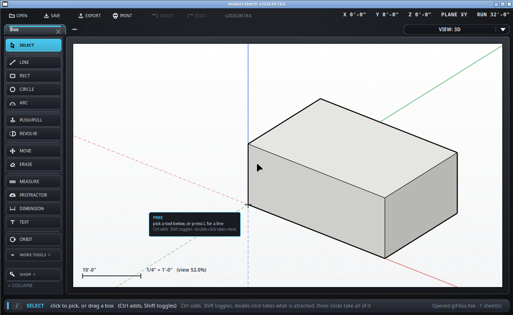

Which surface a click lands on when you are in 3D.
A click on the screen is two numbers, and a point in the model is three. The working plane is what makes up the difference: it is the flat surface your clicks land on.
In PLAN there is nothing to think about - everything lands on the floor. In a 3D view it matters, and this is the thing that catches people out.
Point at the top of a box and draw, and the shape lands on the top of the box. Point at the side, and it lands on the side. Most of the time that is right and you never notice it.

/plane xz, does the same from the
keyboard.A shape drawn across a face has to stay on that face, or the loop never closes and no face is made. If a shape you drew in 3D refuses to fill in, that is almost always why: one point wandered off the plane. Lock the plane first and every point of the shape is held to it.
Once a line is under way the arrows stop picking the plane and start locking a direction instead, which is what they are for at that point.
Draw it in PLAN, where there is no question, then push it up. That is the short way round most of the time, and it is why PLAN and push/pull between them cover so much.